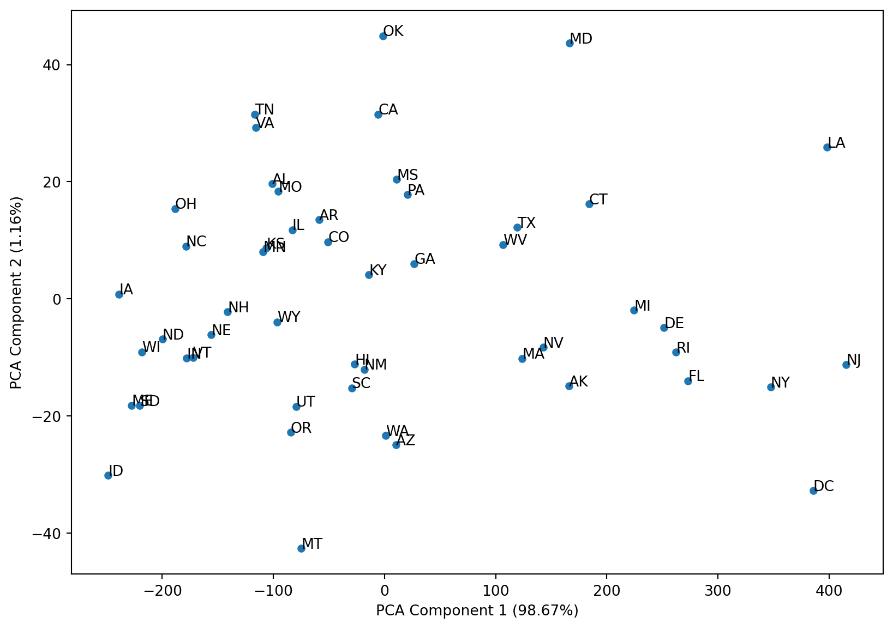

In this blog post, I will use the Seaborn “Car Crashes” dataset in order to group similar states together and observe patterns with motor accidents in these states.
Get and Examine the Data
import seaborn as snsimport matplotlib.pyplot as pltimport pandas as pdsns.get_dataset_names()crashes = sns.load_dataset('car_crashes')crashes.head()
total
speeding
alcohol
not_distracted
no_previous
ins_premium
ins_losses
abbrev
0
18.8
7.332
5.640
18.048
15.040
784.55
145.08
AL
1
18.1
7.421
4.525
16.290
17.014
1053.48
133.93
AK
2
18.6
6.510
5.208
15.624
17.856
899.47
110.35
AZ
3
22.4
4.032
5.824
21.056
21.280
827.34
142.39
AR
4
12.0
4.200
3.360
10.920
10.680
878.41
165.63
CA
We see that this dataset contains various details about accidents, like whether the driver was speeding or intoxicated. There is also the abbrev column, which indicates the state in which the accident took place.
crashes.shapecrashes[crashes['abbrev'] =="DC"]
total
speeding
alcohol
not_distracted
no_previous
ins_premium
ins_losses
abbrev
8
5.9
2.006
1.593
5.9
5.9
1273.89
136.05
DC
The reason there are 51 rows is because the 50 states along with DC are included. Now, let’s check for missing or invalid data.
It looks like the data is valid, so we are good to proceed. Let’s first visualize the total column for each of the states. To make the barplot less cluttered, let’s focus on the 5 states with the highest number of crashes and the 5 states with the lowest number of crashes.
On the other end of the spectrum, Connecticut, Washington state, Minnesota, Massachussetts, and DC have the fewest crashes.
Dimensionality Reduction
We have 7 columns in our dataset, not including the state abbreviation. With so many columns, it is hard to visualize how similar data points are to one another. Therefore, we will need to perform dimensionality reduction before we can visualize similarities between different data points.
from sklearn.decomposition import PCAimport pandas as pdpca = PCA(n_components=2)# Remove the abbreviation column, as it is not helpful in comparing data points. crashes_without_abbrev = crashes.set_index('abbrev')crashes_without_abbrev.loc[:, crashes_without_abbrev.columns !='abbrev']crashes_without_abbrevcrashes2D = pca.fit_transform(crashes_without_abbrev)crashes2D = pd.DataFrame(crashes2D, index=crashes_without_abbrev.index)pca.components_
Now, let’s see how much of the variance in the data is explained by the first 2 PCA dimensions.
pca.explained_variance_ratio_
array([0.98671551, 0.01155058])
The first component explains the vast majority of the variance (over 98%), while the second column explains almost all of the remaining variance.
1- pca.explained_variance_ratio_.sum()
0.001733914130986669
In fact, only around 0.17% of the variance is not explained by these first two components.
Now, let’s visualize the data using a PCA plot.
ax = crashes2D.plot.scatter(x=0, y=1, figsize=(10,7))for ind,row in crashes2D.iterrows(): ax.text(row[0], row[1], ind)ax.set_xlabel('PCA Component 1 (98.67%)');ax.set_ylabel('PCA Component 2 (1.16%)');# crashes2D# for idx, row in crashes2D_df.iterrows():# print(idx)# print(row)# ax.annotate(row['label_var'], (row['x_var'], row['y_var']))

The plot above labels the states and plots them according to the two principal components. Even though accident totals is just one dimension, we can see that West Virginia, Arkansas, and Kentucky, three of the states that had high totals, are in the same approximate area.
Now, let’s cluster the states together, using the K-Means algorithm. First, let’s try to find the optimal number of clusters.
Elbow Curve
Let’s draw an elbow curve to visualize how the inertia drops as the number of clusters increases.
import matplotlib.pyplot as pltfrom sklearn.cluster import KMeanskmeans_per_k = [KMeans(n_clusters=k, random_state=42).fit(crashes_without_abbrev)for k inrange(1, 10)]inertias = [model.inertia_ for model in kmeans_per_k]plt.figure(figsize=(8, 3.5))plt.plot(range(1, 10), inertias, "bo-")plt.xlabel("$k$");plt.ylabel("Inertia");plt.grid()plt.show()# plt.annotate("", xy=(4, inertias[3]), xytext=(4.45, 650),# arrowprops=dict(facecolor='black', shrink=0.1))
From this plot, it appears that in fact k=2 is the inflection point of the graph. Let’s also construct a silhouette plot.
from sklearn.metrics import silhouette_scoresilhouette_scores = [silhouette_score(crashes_without_abbrev, model.labels_)for model in kmeans_per_k[1:]]plt.figure(figsize=(8, 3))plt.plot(range(2, 10), silhouette_scores, "bo-")plt.xlabel("$k$")plt.ylabel("Silhouette score")plt.grid()plt.show()
It appears that 2 clusters is the best choice according to both the elbow curve and the silhouette score. There doesn’t appear to be a good reason to not choose 2 clusters, so let’s proceed with the KMeans algorithm using 2 clusters.
From this plot, we can see a clear split along PC1. The vertical line on the plot separates the two clusters perfectly. We can see that states to the right of that line belong to one cluster and states to the left of the vertical line lie in the other cluster. Since PC1 explains over 98% of the variance, this approach would make sense.